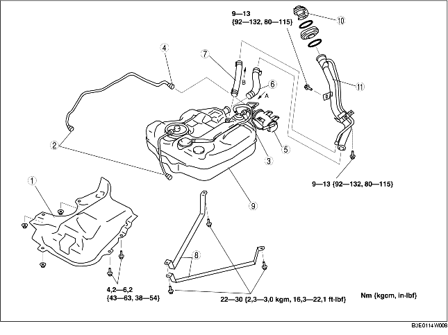

VERWIJDEREN/PLAATSEN BRANDSTOFTANK [ZJ, Z6]
B3E011442110W01
-
Waarschuwing
-
• Het repareren van een brandstoftank met brandstof erin is gevaarlijk. Een explosie of brand kan ernstig letsel veroorzaken. Reinig een brandstoftank voor reparatie altijd grondig met een hogedrukreiniger.
1. Parkeer de auto op een vlakke en horizontale ondergrond.
2. Neem de voorzorgsmaatregelen in acht bij het uitvoeren van de werkzaamheden en voorkom dat er brandstof wordt gemorst. (Zie PROCEDURE VOOR REPARATIE [ZJ, Z6, LF].)
-
Waarschuwing
-
• Iemand die geladen is met statische elektriciteit kan een brand of explosie veroorzaken, wat ernstig letsel tot gevolg kan hebben. Raak voordat de brandstof uit de tank gehaald wordt een auto aan om eventuele statische elektriciteit te ontladen.
3. Tap de brandstof uit de tank af aan de hand van de volgende procedure:
-
(1) Neem de snelkoppeling los (in de motorruimte). (Zie VERWIJDEREN/PLAATSEN SNELKOPPELING [ZJ, Z6, LF].)
-
(2) Sluit een lange slang aan op de losgenomen brandstofleiding en laat de brandstof in een daarvoor geschikte opvangbak lopen.
-
(3) Sluit het WDS of een vergelijkbare tester aan op diagnosestekker 2.

-
(4) Zet het contact in stand ON.
-
(5) Schakel de brandstofpomp in met de simulatiefunctie FP.
-
Opmerking
-
• Het kan zijn dat de brandstofpomp niet werkt als er geen brandstof in de tank zit (brandstofpomp draait loos rond). Controleer voortdurend de hoeveelheid brandstof die wordt afgevoerd en schakel de pomp onmiddellijk uit wanneer er in feite geen brandstof meer wordt afgevoerd.
-
(6) Zet het contact in stand LOCK wanneer er in feite geen brandstof meer wordt afgevoerd door de slang.
-
(7) Neem de minkabel van de accu los.
4. Verwijder de zitting van de achterbank. (Zie VERWIJDEREN/PLAATSEN ACHTERBANK.)
5. Verwijder het servicedeksel.
6. Neem de stekker van de brandstofpomp los.
7. Verwijder de beschermkap van het koolstoffilter. (Zie VERWIJDEREN/PLAATSEN KOOLSTOFFILTER [ZJ, Z6, LF].)
8. Laat de hoofddemper zakken, zodat het hitteschild kan worden verwijderd. (Zie VERWIJDEREN/PLAATSEN UITLAATSYSTEEM [ZJ, Z6].) (Zie VERWIJDEREN/PLAATSEN UITLAATSYSTEEM [LF].)
9. Verwijder het onderpaneel achter (links).
10. Verwijder de onderdelen in de aangegeven volgorde, zie de tabel.
11. Plaats de onderdelen in omgekeerde volgorde.
12. Controleer alle onderdelen aan de hand van de CONTROLE NA REPARATIE. (Zie PROCEDURE NA REPARATIE [ZJ, Z6, LF].)

.
|
1
|
Hitteschild
|
|
2
|
Snelkoppeling (voorzijde brandstoftank)
|
|
3
|
Snelkoppeling (op terugslagklep brandstoftank)
|
|
4
|
Snelkoppeling (op koolstoffilter, zijde magneetklep dampafvoer)
|
|
5
|
Koolstoffilter
|
|
6
|
Koppelslang
|
|
7
|
Ontluchtingsslang
|
|
8
|
Beugel
|
|
9
|
Brandstoftank
|
|
10
|
Tankdop
|
|
11
|
Vulpijp
|
Aanwijzing voor verwijderen - vulpijp
1. Verwijder het achterwiel (rechts).
2. Verwijder het spatbord (rechts achter).
3. Ondersteun met een transmissiekrik het subframe achter.
4. Verwijder de onderste bouten van de schokdemper (rechts achter). (Zie VERWIJDEREN/PLAATSEN SCHOKDEMPER ACHTER.)
5. Draai de bevestigingsmoeren van het subframe achter (6 stuks) los en laat het subframe 30 mm {1,2 in} zakken. (Zie VERWIJDEREN/PLAATSEN SUBFRAME ACHTER.)
6. Verwijder de vulpijp.
Aanwijzing voor plaatsen - koppelslang
1. Plaats de koppelslang en slangklem zoals in de afbeelding is aangegeven.
Aanwijzing voor plaatsen - ontluchtingsslang
1. Plaats de ontluchtingsslang en slangklem zoals in de afbeelding is aangegeven.